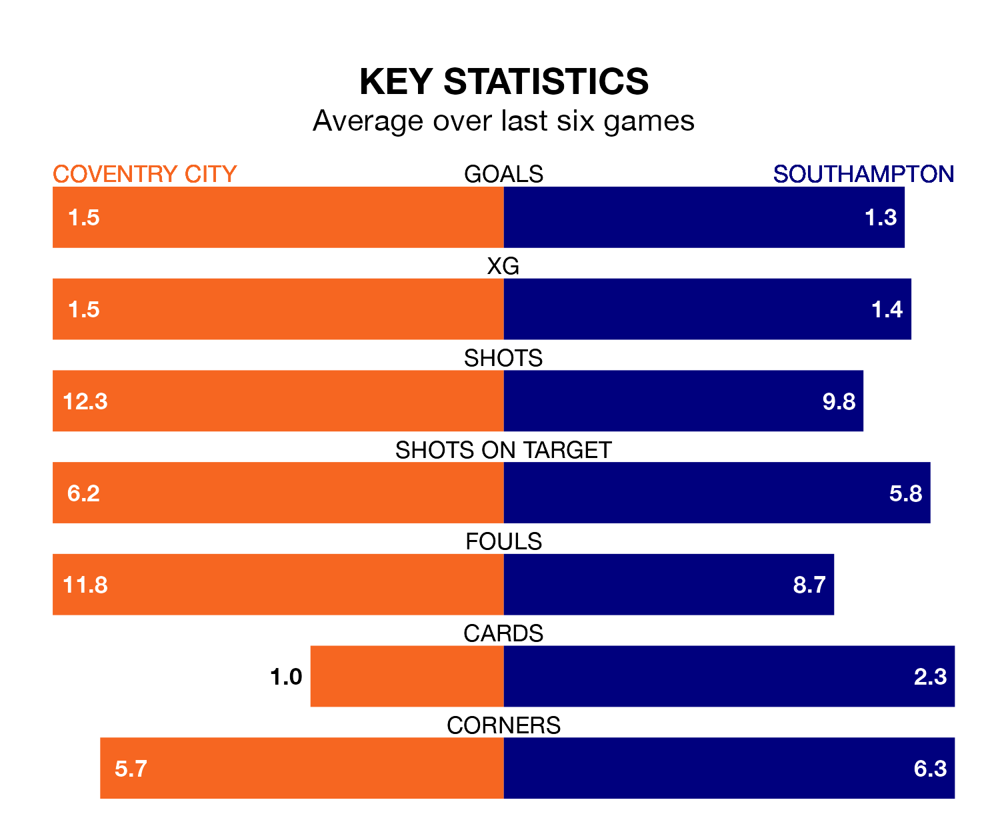

Southampton face Coventry City on Wednesday seeking to protect their formidable unbeaten run in the Championship.
The Saints are unbeaten in 12, with eight wins and four draws, ahead of the 7.45pm kick-off.
They face a Coventry team who have won five and drawn two over the same number of games.
With 32 goals in 20 games so far this season, Southampton are scoring more than average in the league with 1.6 goals per game. And they are conceding at an average rate, letting in 28 goals at a rate of 1.4 per game.
Coventry, meanwhile, are below average scorers, with 1.3 goals per game, compared to a league average of 1.4. They have conceded 1.1 goals per game.
In Adam Armstrong, the Saints have one of the league's most on-form strikers so far this season. He has notched 12 goals in 20 appearances, to sit second in the scoring charts.
His goal rate of one every 144 minutes is quicker than that of Matt Godden, City's top scorer with a goal every 245 minutes, and a total of six goals in 19 games.
The visitors are fourth in the table after 20 games, of which they have won 11 and drawn five, earning 38 points.
The Sky Blues are 11 places behind Southampton in 15th, with six wins and seven draws putting them on 25 points.
Coventry's last match was on Friday, a 2-0 win against Birmingham City, with Callum O'Hare getting the goals for the Sky Blues.
Southampton drew 1-1 with Watford last time out, on Saturday, with Che Adams on the scoresheet.
Wednesday's match will be refereed by Ben Toner, who is taking charge of his first Championship game this season.
He is yet to oversee a match featuring either Coventry or Southampton this season.
